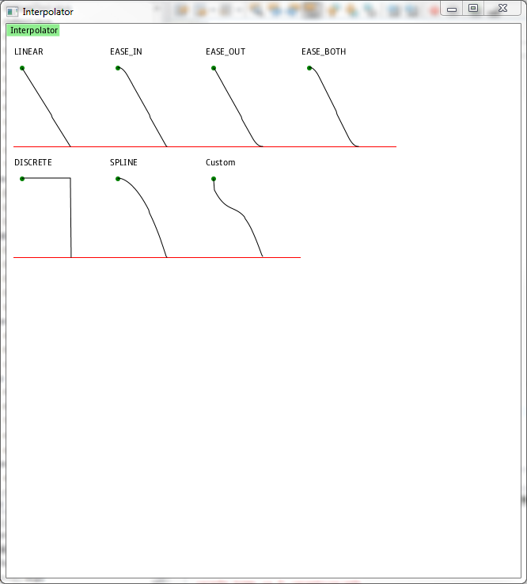

Interpolator Test
This test verify that different implementations of javafx.animation.Interpolator works correctly. It visualize every Interpolator in Timeline
as a function from time (in terms of this Timeline).
Test workflow:
- You should see window frame titled "Interpolator".
- Don't move window or perform any actions on computer until drawing ends.
- Verify there are 7 animations are being drawn in this frame.
- Wait till all animations in this frame finish.
- Every animation has a title. Verify described behaviour for each title as listed below.
For every animation verify that it starts from green circle
under the title and ends at the bottom red line.
- LINEAR: straight line
- EASE_IN: almost straight line with a curve at the start
- EASE_OUT: almost straight line with a curves near the end
- EASE_BOTH: almost straight line with curves at the start and near the end
- DISCRETE: horizontal line connected to vertical line
- SPLINE: parabolic line
- CUSTOM: sinusoidal line
- Note image may not look exactly as one below, judge according to table above.
Example:
